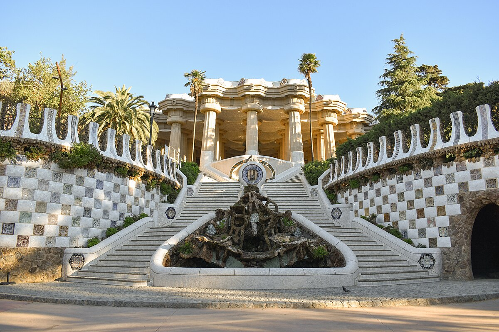

Lugares de interés: Barcelona
La Sagrada Família
La Sagrada Família es una famosa basílica situada en Barcelona. La iglesia es conocida por su estilo arquitectónico único, que fusiona el modernismo catalán con elementos góticos y naturales.
Parque Güell
El Parque Güell es uno de los parques más emblemáticos de Barcelona, España. Fue diseñado por el arquitecto Antoni Gaudí y es considerado una de sus obras más destacadas, además de ser un ejemplo representativo del modernismo catalán. El parque fue originalmente concebido como un complejo residencial en una zona elevada de la ciudad, pero finalmente se transformó en un parque público debido a diversas dificultades con el proyecto.
Casa Batlló
La Torre Eiffel es una famosa estructura de hierro ubicada en París, Francia. Fue diseñada por el ingeniero Gustave Eiffel y se completó en 1889 para la Exposición Universal de París, que celebraba el centenario de la Revolución Francesa. La torre tiene 330 metros de altura, lo que la convierte en una de las estructuras más altas de París y una de las más reconocidas en el mundo.
La Rambla
La Rambla es una famosa avenida peatonal ubicada en el centro de Barcelona, España. Se extiende desde la Plaza de Cataluña hasta el puerto, a lo largo de aproximadamente 1.2 kilómetros. Es una de las principales atracciones turísticas de la ciudad y es conocida por su animada atmósfera, sus árboles a lo largo del paseo y una variedad de actividades culturales y comerciales.